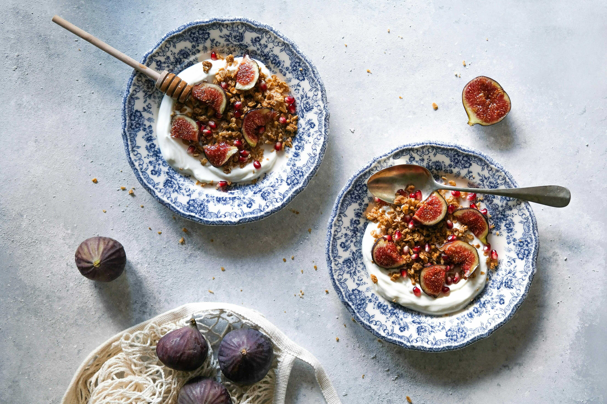

The 90-30-50 method is not a diet in the traditional sense. There is no forbidden food list. No calorie ceiling. No points system or app subscription. It is a macronutrient framework — a daily minimum of 90 grams of protein, 30 grams of fiber, and 50 grams of healthy fat. That's it. Hit those three numbers, and you let the rest follow naturally.
The method was created by registered dietitian Courtney Kassis, who shared her own results on social media — a reported 15-pound weight loss and 2% body fat reduction over two months — and sparked a conversation that is still going. Since then, it has been covered, debated, and tested by nutritionists, fitness coaches, and women across every corner of the internet.
I wanted to understand the science behind the hype. So here is an honest look at what the method actually does, what experts say about it, and what a real whole-foods day of eating looks like when you follow it.
The anchor of the whole method. Keeps you full, protects muscle, and makes your metabolism work harder just by being there
Most of us are getting half of what we need. Fiber is the quiet thing that keeps everything else steady — digestion, blood sugar, gut health, mood
Not the enemy. Never was. Good fat is how your hormones communicate, how your brain stays clear, and how your body feels steady instead of frantic
Why This Method Works — The Science Behind It
Each of these three targets is doing a specific job. Together, they address the core reasons most diets fail: hunger, blood sugar crashes, and muscle loss.
Protein at 90 grams is the foundation. Research consistently shows that higher protein intake increases satiety hormones (like peptide YY and GLP-1) while suppressing the hunger hormone ghrelin. Protein also has the highest thermic effect of any macronutrient — meaning your body burns more calories simply digesting it. And crucially, adequate protein protects muscle mass during weight loss, which keeps your metabolism from slowing down as you lose fat.
Fiber at 30 grams is the number most of us are missing. The average adult gets roughly 15 grams per day — half the recommended amount. Fiber slows digestion, which flattens the glucose curve after meals — smoothing out the sharp rises and dips that send you reaching for something sweet an hour later. It also feeds the good bacteria in your gut, which research increasingly links to everything from mood regulation to immune function to body weight management.
Healthy fats at 50 grams fill the gap that low-fat diet culture left behind. Monounsaturated and polyunsaturated fats — from avocados, olive oil, nuts, seeds, and fatty fish — are essential for hormone production, brain health, and the absorption of fat-soluble vitamins (A, D, E, and K). They also contribute to satiety in a way that refined carbohydrates never will.
Instead of counting everything, you focus on getting enough of the right things. When you do, the overconsumption of the wrong things tends to resolve itself.
What Nutritionists and Dietitians Actually Say
The expert response to the 90-30-50 method has been largely — but not universally — positive. Here is a fair picture of what professionals are saying.
"There is huge value in a simple plan that gets you to prioritise those essential nutrients. Most people are undereating protein and fiber, and that alone is contributing to their cravings, blood sugar instability, and poor energy levels."
— Registered Dietitian, as cited in Healthline
Nutritionists generally agree that the logic is sound. Protein, fiber, and healthy fats are exactly the nutrients that reduce decision fatigue, promote satiety, and support sustainable weight management. The method essentially reframes eating as addition rather than subtraction — you're focused on what to include rather than what to eliminate.
"For most moderately active women, 90 grams of protein is a meaningful baseline. It may not be sufficient for those doing significant strength training or endurance sport, who may need considerably more to support muscle repair and performance."
— Sports Nutritionist perspective, via The Balanced Nutritionist
The method also draws praise for what it doesn't do. It doesn't eliminate food groups. It doesn't require a calorie deficit to be tracked. It doesn't label foods as good or bad. For many women — particularly those with a history of restrictive eating — this framework is genuinely refreshing.
Who Should Approach This Carefully
No single nutritional framework works for every body, and this one is no exception. A few important caveats worth knowing:
Those with kidney disease or compromised kidney function should speak with their doctor before significantly increasing protein intake, as high protein can place additional strain on the kidneys. Very sedentary individuals may also find 90 grams of protein higher than their actual needs. If you have any underlying health conditions, the Academy of Nutrition and Dietetics recommends working with a Registered Dietitian Nutritionist before starting any new dietary framework.
The method also doesn't explicitly address overall calorie intake. While the satiety created by protein, fiber, and fat naturally tends to reduce overeating, someone consuming large amounts of calorie-dense foods could theoretically hit the three targets while still eating in a significant surplus. Context matters.
A Full Day of Eating — Real Whole-Food Recipes That Hit the Numbers
This is how I would eat on a 90-30-50 day — whole foods, nothing processed, no added sugar, low in salt, and rich in the good fats that actually nourish. Each meal is designed to be satisfying, not complicated.

Whole foods, intentional nourishment — eating that supports your body rather than battles it.
Creamy, filling, and done in five minutes. The protein from Greek yogurt is one of the most efficient ways to start the day well — pair it with seeds and berries and you've built a blood-sugar-stable morning from the very first meal.
1 cup (220g) plain full-fat Greek yogurt ·
1 tbsp natural almond butter ·
1 tbsp chia seeds ·
1 tbsp hemp seeds ·
½ cup fresh blueberries ·
Small handful of pumpkin seeds.
Layer yogurt into a bowl, swirl in almond butter, scatter seeds and berries on top.
No cooking, no sugar, no fuss.
This is the kind of lunch that feels like a treat and quietly does an enormous amount of work. Wild salmon brings omega-3s and complete protein. The avocado and olive oil provide anti-inflammatory fats. The leafy greens, chickpeas, and roasted vegetables stack fiber without effort.
150g baked or pan-seared wild salmon ·
2 large handfuls of mixed greens (spinach, rocket, watercress) ·
½ avocado, sliced ·
½ cup cooked chickpeas ·
½ cup roasted cherry tomatoes ·
¼ cucumber, sliced ·
Dressing: 1½ tbsp extra-virgin olive oil, lemon juice, fresh dill, black pepper.
Assemble over greens, drizzle with dressing. No croutons, no bottled dressings with hidden sugar.
A real, sustaining snack — not a handful of crackers or a protein bar with an ingredient list longer than a novel. Two hard-boiled eggs with homemade or clean-ingredient hummus and raw vegetables bridges the gap between lunch and dinner without a blood sugar spike.
2 hard-boiled eggs · 3 tbsp hummus (look for one with just chickpeas, tahini, lemon, olive oil — no added preservatives) · Sliced cucumber, celery sticks, and radishes for dipping.
A dinner that completes the day's targets beautifully — lean protein from chicken, complete protein and extra fiber from quinoa, and a generous portion of roasted vegetables that make the whole plate feel warm and genuinely nourishing rather than calculated.
180g chicken breast or thigh (skin on for extra fat, or breast for leaner) ·
Marinate in: 1 tbsp olive oil, garlic, fresh rosemary, thyme, lemon zest, black pepper — no added salt ·
Roast at 200°C for 22–25 minutes.
Serve with: ¾ cup cooked quinoa ·
Large handful of wilted spinach sautéed in ½ tsp olive oil and garlic ·
1 cup roasted courgette and red pepper ·
Finish with ½ tbsp extra-virgin olive oil drizzled over everything.
Daily totals for this example
Across these four meals: approximately 120g protein, 32g fiber, and 64g healthy fat — comfortably meeting all three targets while staying completely whole-food, free of added sugar, low in salt, and deeply satisfying. This is not a deprivation day. It is a nourished one.
If you are smaller, less active, or simply not as hungry, you do not need all four components every day. The method sets minimums, not maximums. Listen to your body above the numbers.
The bottom line, from me to you
The 90-30-50 method works because it asks you to build your plate around what your body actually needs — not around restriction, willpower, or guilt. Whether you follow it strictly or just use it as a loose lens for eating better, the principles underneath it are solid. Eat more protein. Eat more fiber. Don't be afraid of the good fats. The rest tends to take care of itself.